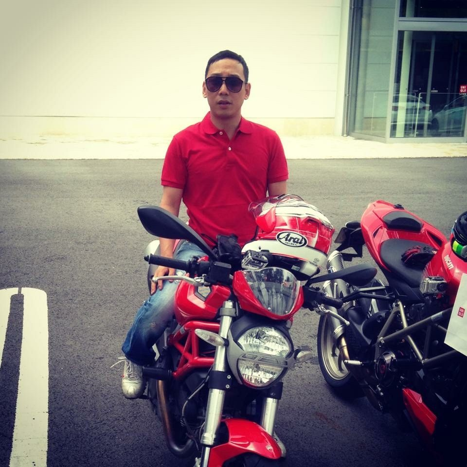
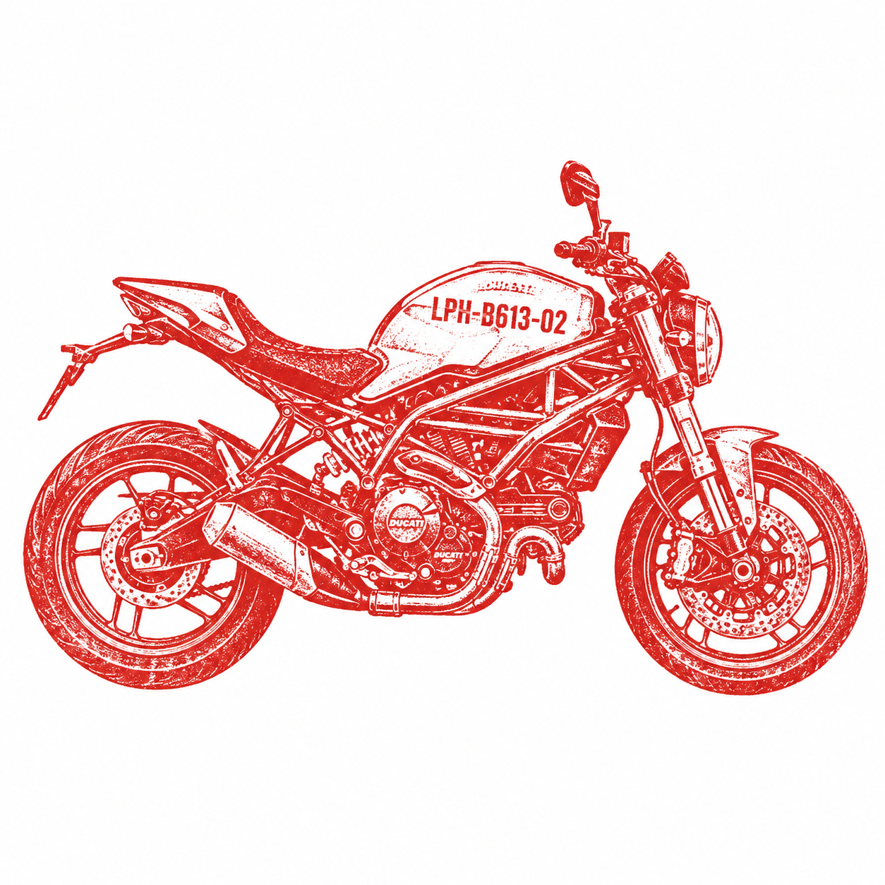
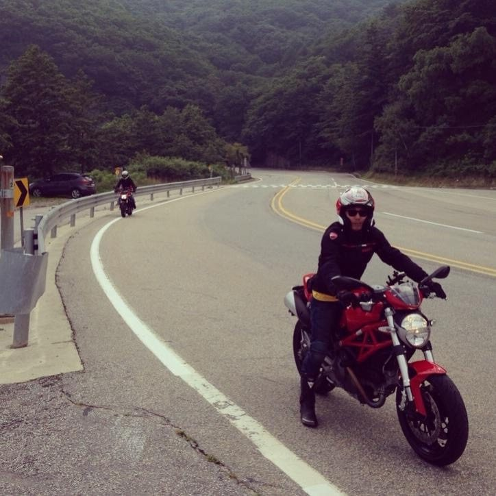
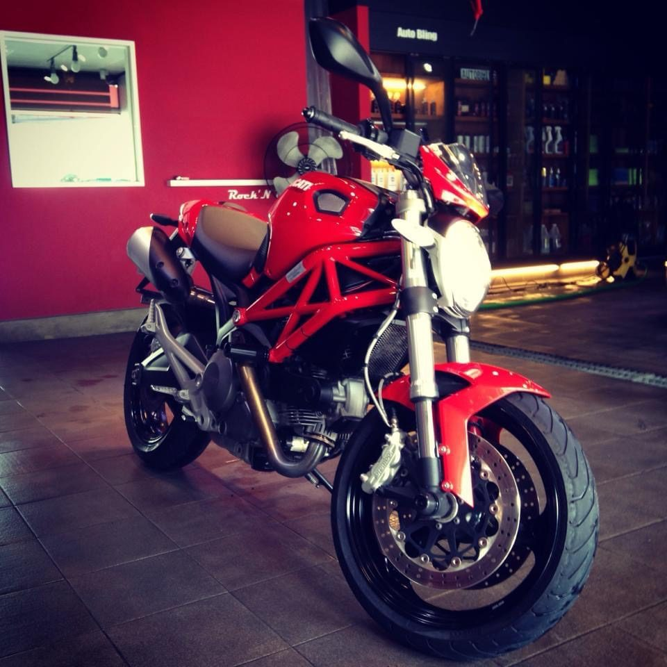
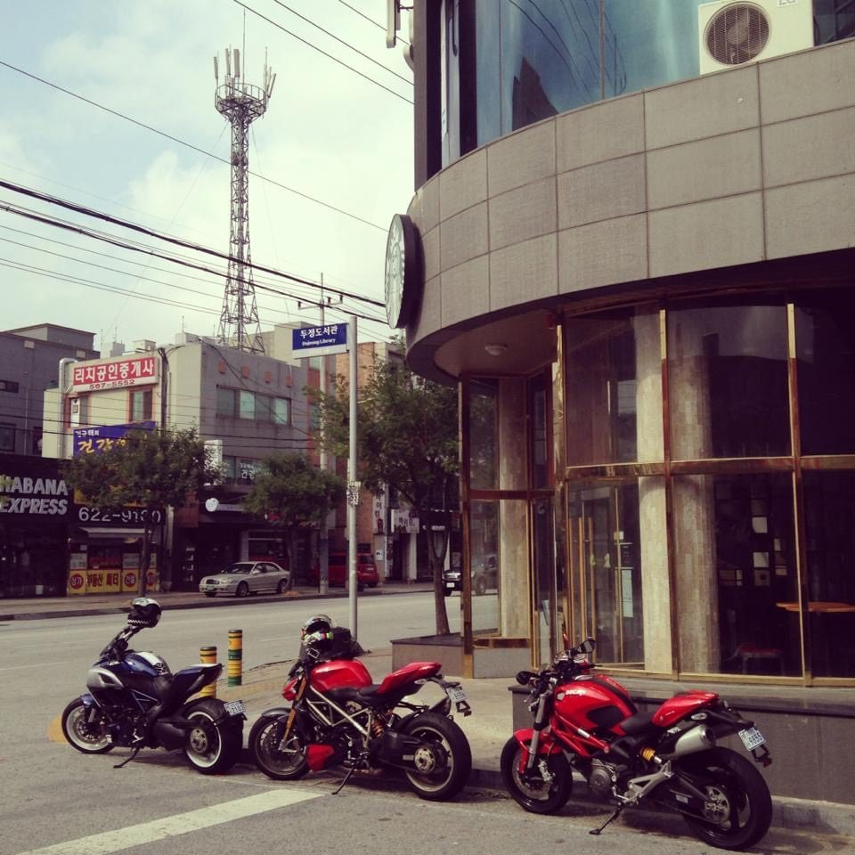
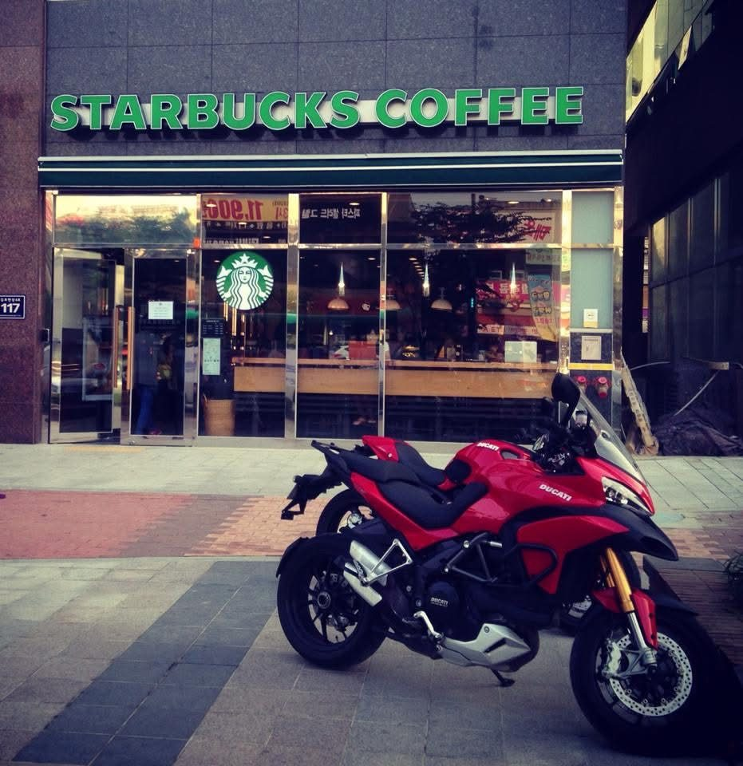
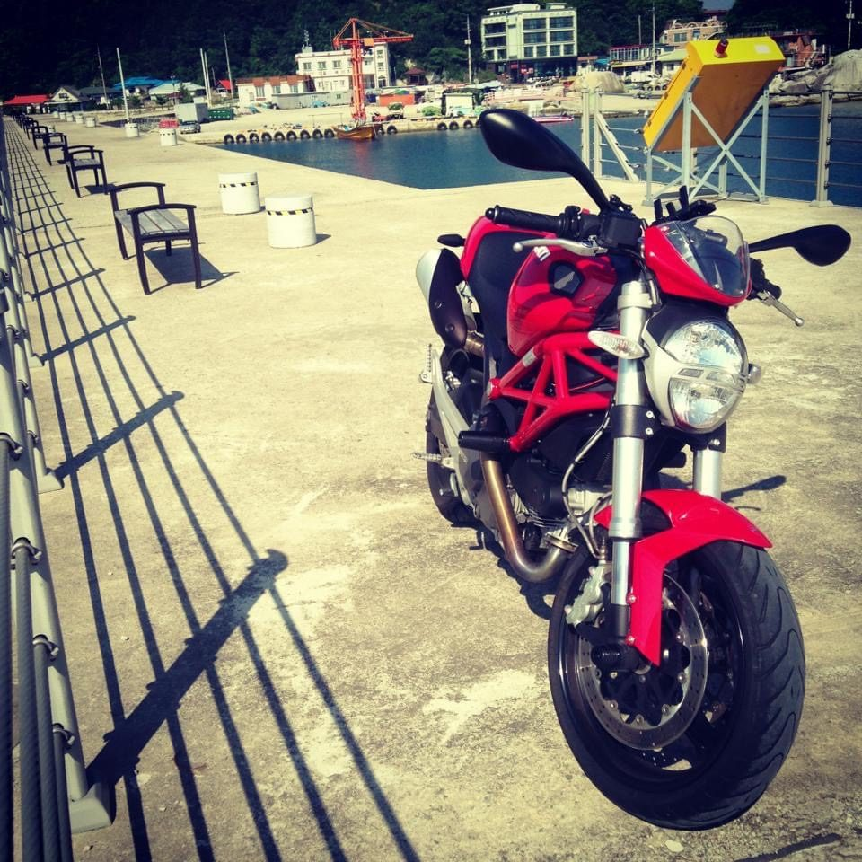
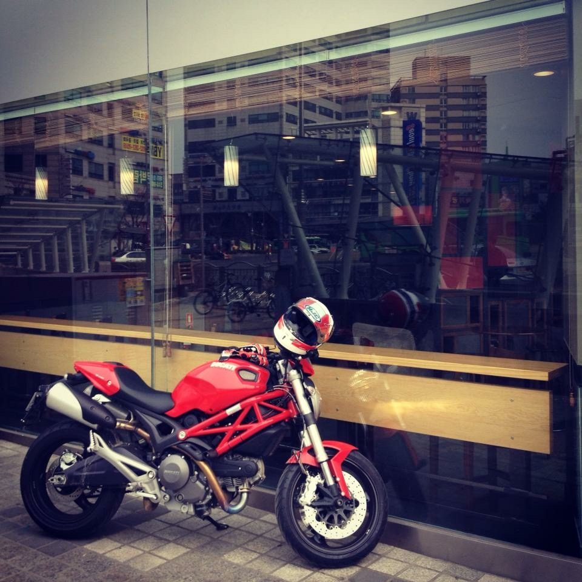
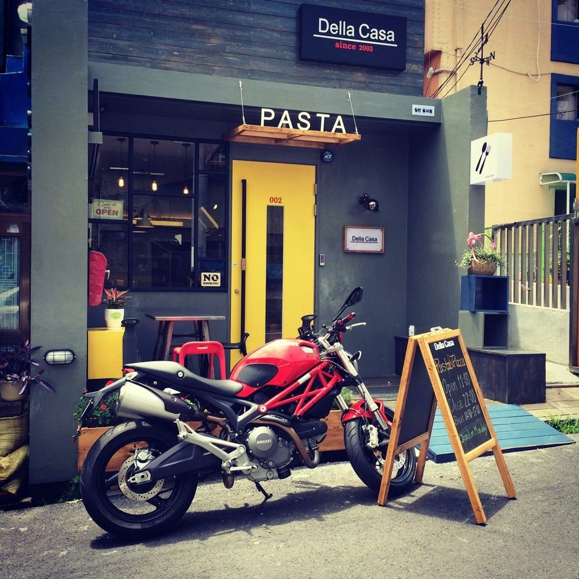
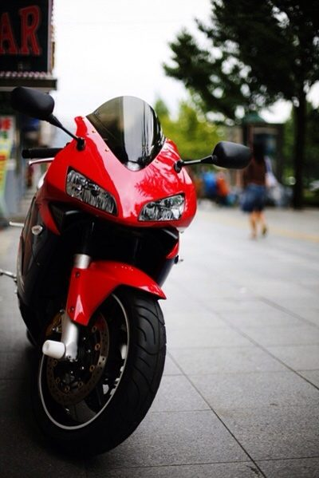

살아 있음을 확인하던 순간
바이크 · 결심 · 감각

더 빨리, 더 멀리, 그리고 더 위험하게.
마흔, 병상에서 정했다. 죽기 전에 하고 싶은 건 하자. 면허도 없이 두카티를 계약했다.
그때 살아 있다는 감각은 아직 내 안에 남았다. 미루지 않는 사람들끼리는 안다. HAM MEDIA의 빨강이 두카티에서 온 건, 그래서다.
HAM MEDIA 별자리 시스템 / LPH-B613-02
인생에 딱 좋은 시기가 있다.
나에게는 40대의 바이크가 그랬다.
딱 좋았던 3년.

01 · 결심의 색
검정은 밤이자 벽이다. 빨강은 오래 미뤄둔 마음이 도착했을 때, 딱 한 번 찍히는 도장이다.
#0f0c0b첫 화면의 벽. 만년필별보다 더 따뜻한 검정.
#1a1f2e그림자, 어두운 그라디언트, 도로 기억의 깊이.
#9ca3a8얇은 선, 작은 정보, 금속처럼 차가운 가장자리.
#CC0000결심이 도착한 순간, 스탬프처럼 한 번만.
#f3ead8오래 남길 이야기를 조용히 읽는 밝은 지면.
빨강은 배경이 아니라 한 번 찍는 도장입니다. 많아지면 결심이 아니라 장식처럼 보이기 때문에, 이 별에서는 드물게 남깁니다.
02 · 말의 힘
별 이름과 결심의 한 줄만 굵게. 오래 곱씹는 이야기는 조용히 흐른다.
바이크별은 무엇을 탔는지보다, 왜 더 미루지 않았는지를 남기는 곳입니다. 마흔에 몸으로 정한 결심이 이 별의 중심입니다.
LPH-B613-02 / 아직 달리는 중 / HAM MEDIA 별자리
03 · 별 안으로
여기 눌러 들어가는 곳은 장비 리뷰가 아니다. 결심과, 사진과, 달렸던 길의 기록이다.
어두운 화면에서 모든 이야기를 밀어붙이지 않습니다. 오래 읽어야 하는 문장은 한 번 밝은 곳으로 옮깁니다.
LPH-B613-02 스탬프는 끝났다는 표시가 아닙니다. 딱 좋았던 3년 뒤에도, 마음은 아직 달리는 중이라는 표식입니다.
바이크별 · 문장
바이크 · 결심 · 감각

더 빨리, 더 멀리, 그리고 더 위험하게.
마흔, 병상에서 정했다. 죽기 전에 하고 싶은 건 하자. 면허도 없이 두카티를 계약했다.
그때 살아 있다는 감각은 아직 내 안에 남았다. 미루지 않는 사람들끼리는 안다. HAM MEDIA의 빨강이 두카티에서 온 건, 그래서다.
바이크 · 길 · 속도

콘텐츠도 바이크도 같다. 완벽한 준비를 기다리지 않는다.
해도 후회, 안 해도 후회라면 해보고 후회하자. 바이크별은 그 결심이 남긴 짧은 기록이다.
바이크별 · 장면








관계의 지도
바이크별에 남은 문장, 장면, 이동의 흔적이 더 쌓이면 이곳에 지도가 놓입니다. 지금은 준비중 스탬프만 남겨둡니다.

04 · 고갯길
이 사진은 속도나 장비를 과시하는 장면이 아닙니다. 자전거로 넘었던 속초 가는 고갯길을, 드디어 바이크로 다시 넘어가는 기억을 보여줍니다.
05 · 이 별이 권하는 것
바이크별은 무리하라고 부추기는 말이 아닙니다. 하고 싶었던 일을 계속 미루지 말자는 쪽에 가깝습니다.
06 · 마지막 기준
빠르게 달렸다는 말보다, 아팠던 자리에서 다시 움직이기로 했다는 말이 먼저입니다. 이 별은 소유의 자랑이 아니라 살아본 기억에서 시작합니다.
07 · 별자리
이 별은 HAM MEDIA Design MD 방식으로 정리한 별입니다.
좋아하는 것의 감각을 브랜드의 기준으로 바꾸는 실험이기도 합니다.